What is Marimekko?
Marimekko is a famous Finnish clothing brand, known for its bold and creative design. Alongside its offline retail stores and collaborations with international brands, Marimekko's website serves as the primary e-commerce platform for international customers.
In this project, the focus is on its international website and international customers.
Project Background
The Problem
Marimekko sign in/up flow:
- Does not align with its brand voice.
- Has overlapping descriptions that can result in confusion and frustration.
My Role and Responsibilities
Since the brand already has an established and well-known voice and characteristics. My goal is to do research and make sure those align with the website.
- Research
- Brand personality
- Brand voice and tone
- UX writing
The Challenge
Rewrite a flow that is more conversational and helpful
Research
Reviewing online materials to understand the brand core value
- Marimekko is celebrated for its bold, distinctive patterns that aim to bring joy and positivity to customers' lifestyles through vibrant designs and products.
- The brand's creative design and vibrant colors empower women of all ages who value freedom, authenticity, and individualism.
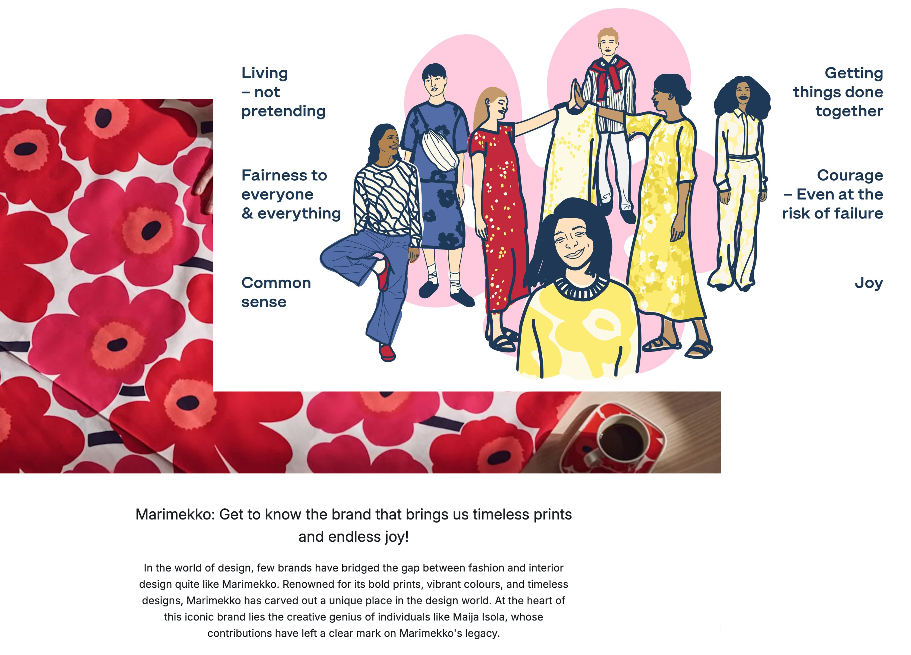
"We want to create products that will stand the test of time, both in terms of aesthetics and longevity."
Analyzing its target audience to understand the customer base
Demographics:
- Predominantly women.
- Age range: 25-55.
Interest: Bold, high-quality designs with a focus on creativity and sustainability
Website target audience:
- International Focus: Includes Finnish and global users, plus expatriates in Finland who may not speak Finnish.
- Age Distribution: Largest segment is 25-34, reflecting a younger, digitally-savvy audience.
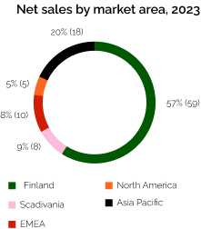
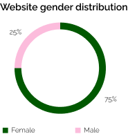
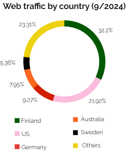
Tone and Voice Guideline
Visualizing brand personality to set tone and style guidance
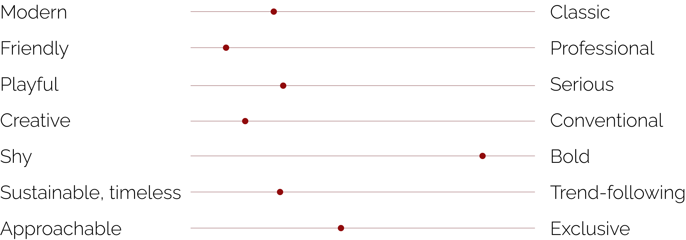
So, brand personality is playful, creative, positive, and friendly. It does not afraid to take risk, to create timeless impact, and to express itself openly and proudly to the world.
Building Marimekko's voice to guide my writing
Even though Marimekko does not have any official brand voice document, its personality and brand voice are clearly demonstrated through its products, prints, marketing campaign, and articles. Based on those materials and researches, I created a Marimekko voice.
These voice pillars would:
- Build trust and connection with customers
- Align communication with Marimekko's identity and values
The Marimekko Voice
- Friendly, but not intrusive
- Bold, but not overpowering
- Playful, but not childish
- Creative, but not chaotic
Conversation Mining and Word List
Doing conversation mining to understand what users are talking about
In order to gain insights about users' demographics, preferences, and motivations, I looked up their conversations in online communities, articles, and social media.
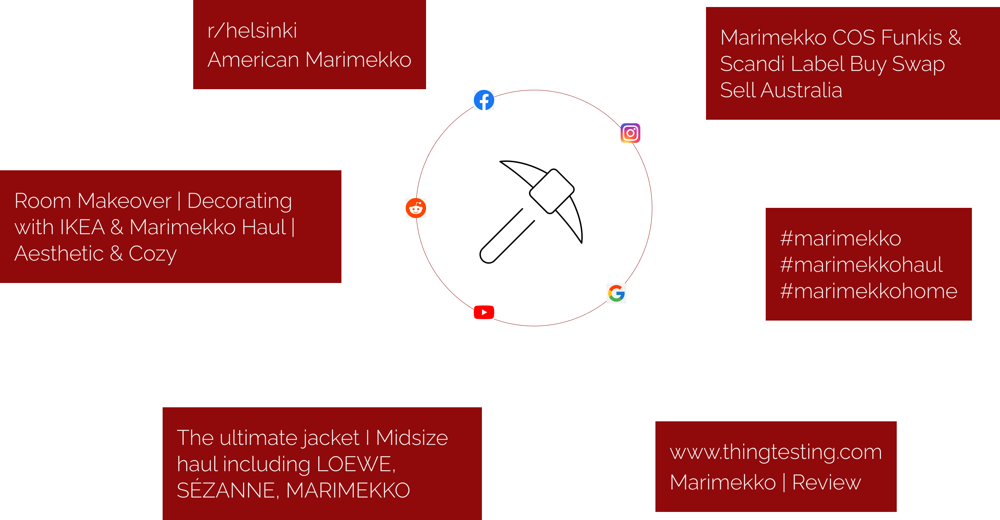
Creating a word lists that attract Marimekko customers
These words are later used for my UX writing part:
Bold
Unikko
Colorful
Joyful
Playful
Authentic
Individuality
Timeless
Sustainable
Inclusive
Artistic
Functional
Freedom
Community
Creative
Vibrant
Empowerment
Pre-loved
Scandinavian
High quality
Universal
Accessible
Heritage
Design-driven
Unique
Marimekko x Uniqlo
Floral
Copy Audit
After conducting desk researches and creating guidelines, I analyzed the current UX copy of the sign in/sign up flow. Overall, the current UX copy does a good job in reflecting the brand voice but can be much more improved to create a cohesive tone and experience for customers.
Before writing, I outlined my goals for the sign in/sign up flow:
- Make the content short and easy to understand
- Show Marimekko's brand voice consistently
- Provide help for users when needed
Scenario 1: New users create account
User feeling: eager to sign up, want to get member's benefit
Product goal: get new users sign up and old users to sign in
Current tone: conversational, informative, formal
before
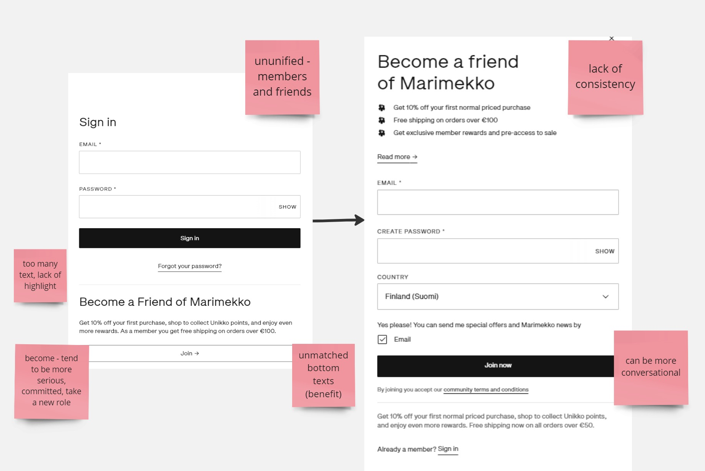
after
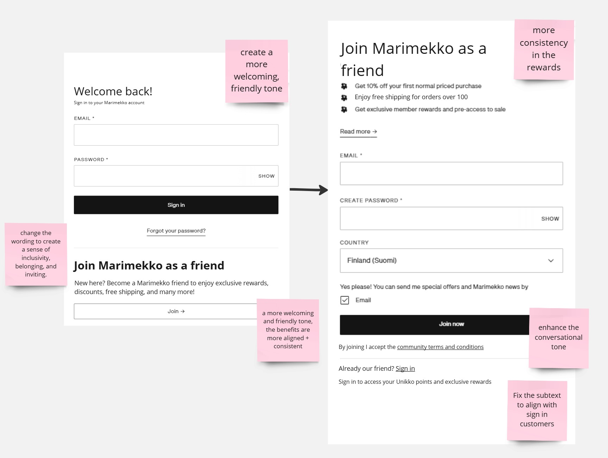
Scenario 2: Users go through onboarding screens
User feeling: confused with the description, want to skip and go fast
Product goal: tell the users about the membership benefits
Current tone: formal, informative
before
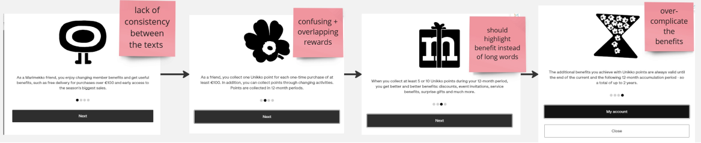
after
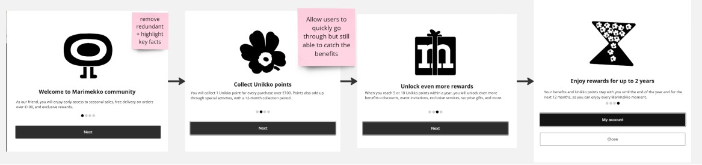
Scenario 3: Users enter wrong email/password
User feeling: frustrated, "which one is wrong"
Product goal: tell the users to reenter email/password
Current tone: formal, not helpful, rigid, robotic
before
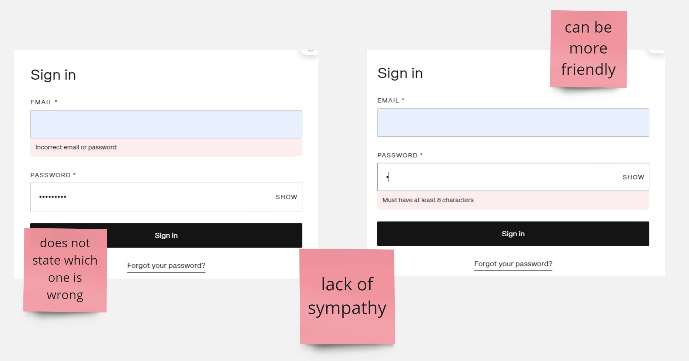
after
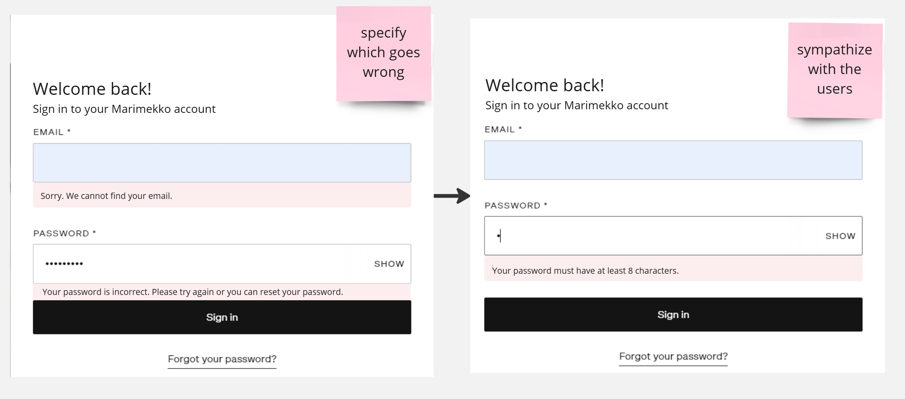
Scenario 4: Users forget password
User feeling: relieved that can recover password but confused if they entered right email or not
Product goal: help users reset password smoothly
Current tone: formal, not so helpful
before
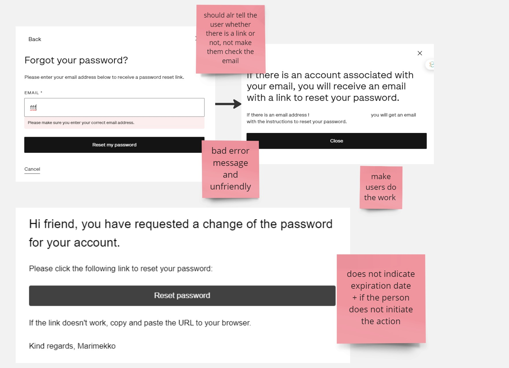
after
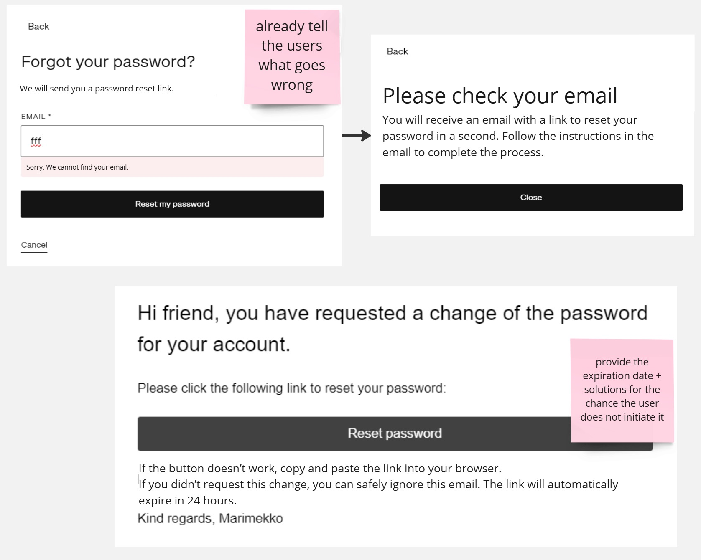
Reflection
Measuring the research's effectiveness
To validate the research, I would conduct user interviews.
Speaking directly with website users would provide deeper insights into their needs and behaviors, helping refine the findings.
Other methods I'd use to test the site's effectiveness:
A/B testing with actual users - to validate content and design decisions.
Testing variations of content and layout would reveal which versions resonate most with the audience and improve engagement.
Time-on-page and bounce rate - to know if the content is serving our audience.
If the homepage's bounce rate is high, I'd review the page title and meta description to ensure alignment with user expectations. If deeper pages have high bounce rates, I'd iterate on their labels and ensure the information architecture (IA) guides users effectively.